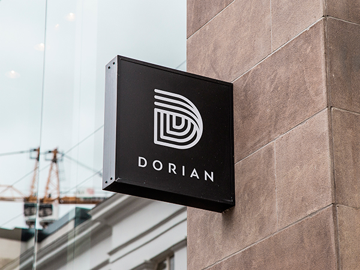
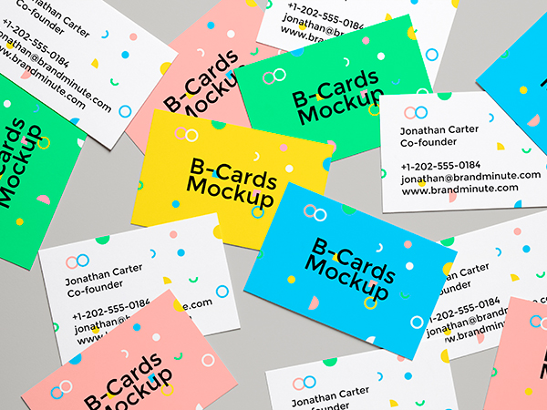
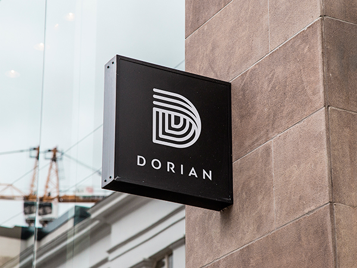
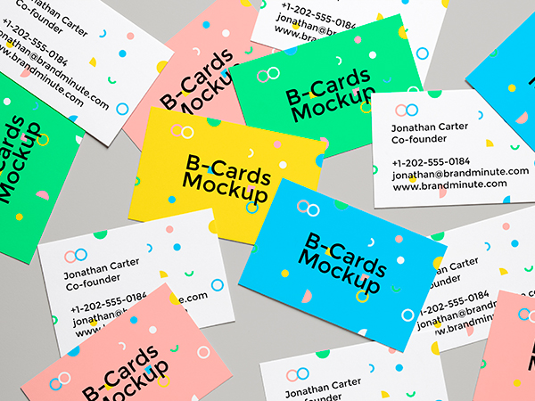

I'm Anish Shrestha,
Web Designer & Web Developer
from Sydney, Australia.
I have good experience in web site design & building and customization. Also I am good at html, css, tailwind which is css framework and in the process of learning javascript it's frameworks and learn backend as well. I love to talk with you about our unique approach. Feel free to contact me writing an email with your project idea.
 


